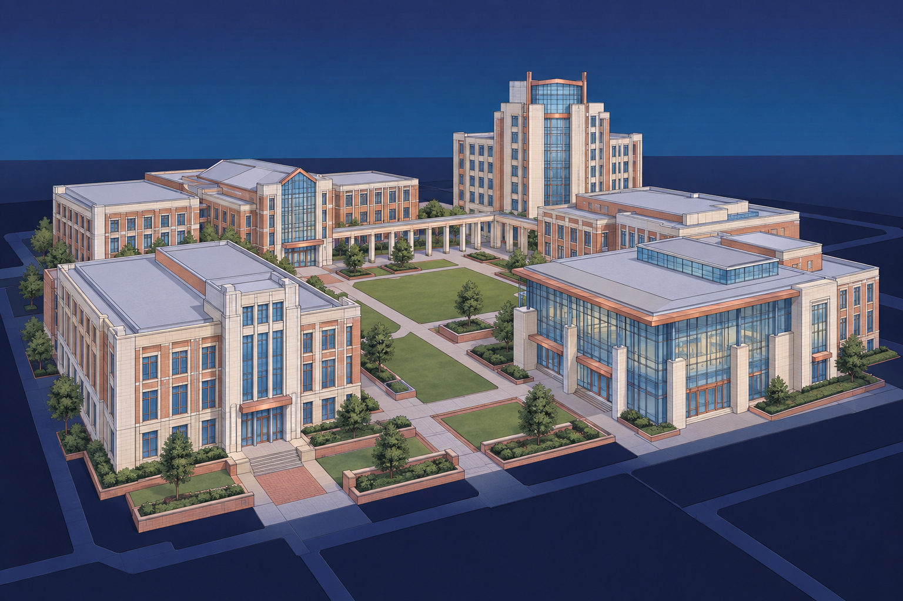

NorthStarWe Bring Answers.
NorthStarWe Bring Answers.EducationIndustry briefing / 01
Education / The recovery priorities
A clear path back to learning.
Plan facility recovery around the classrooms, student services and shared spaces your district or campus needs most.

Every building supports a larger mission.
A closed classroom, dining area or residence hall affects more than one space. NorthStar helps facilities teams address physical damage, define recovery work and coordinate restoration around the institution's priorities.
01
Learning spaces
02
Essential student services
03
Campus coordination
40+ years of experience
Emergency response · Environmental services · Reconstruction